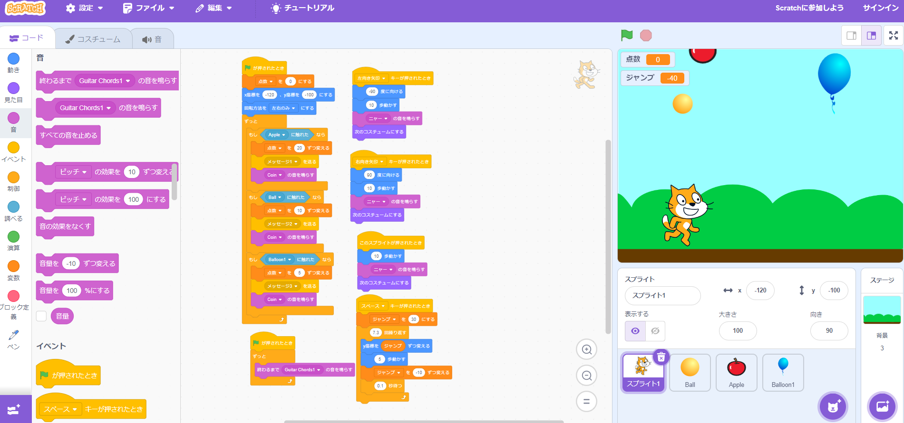

1-2 ゲーム

1.内容
猫を動かして落ちてくるリンゴをキャッチすると、リンゴがなくなり得点が入るゲームを作った。りんごだけでなく、ボールと風船も追加した。ものによって落ちてくるスピードが異なり、入る点数も変えた。また、猫がジャンプをすることができるようにした。BGMが流れるようにし、猫を動かしたとき、点数が入ったときには別の効果音が流れるように設定した。
2.感想
プログラムを組むこと自体はそれほど難しくはなかったが、何個も似たようなプログラムを組んでいるとわからなくなり始めてしまうことが何度かあった。